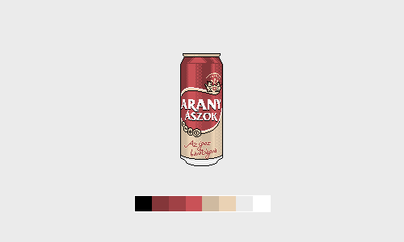

original url http://www.geocities.com/Hollywood/Theater/5364/
last modified 1999-06-07 04:59:56
original url http://www.geocities.com/Hollywood/Theater/6072/
last modified 1999-06-03 19:55:10

original url http://www.geocities.com/Yosemite/Falls/5426/
last modified 1999-06-03 21:52:27

this is #myfirstTweet today’s 8-bit beer is @Heineken enjoy!

Hungary’s golden ace

I’ve been looking into switching from µTorrent since forever. I really liked it but as it got filled with bloatware above v2.2.1, I was stuck with that version, which was released in early 2011. I examined other clients periodically but none of them were to my liking.
Today I finally migrated to qBittorrent so here’s a screenshot of the stats window - observe how ‘Last launched’ should be taken literally in this case.